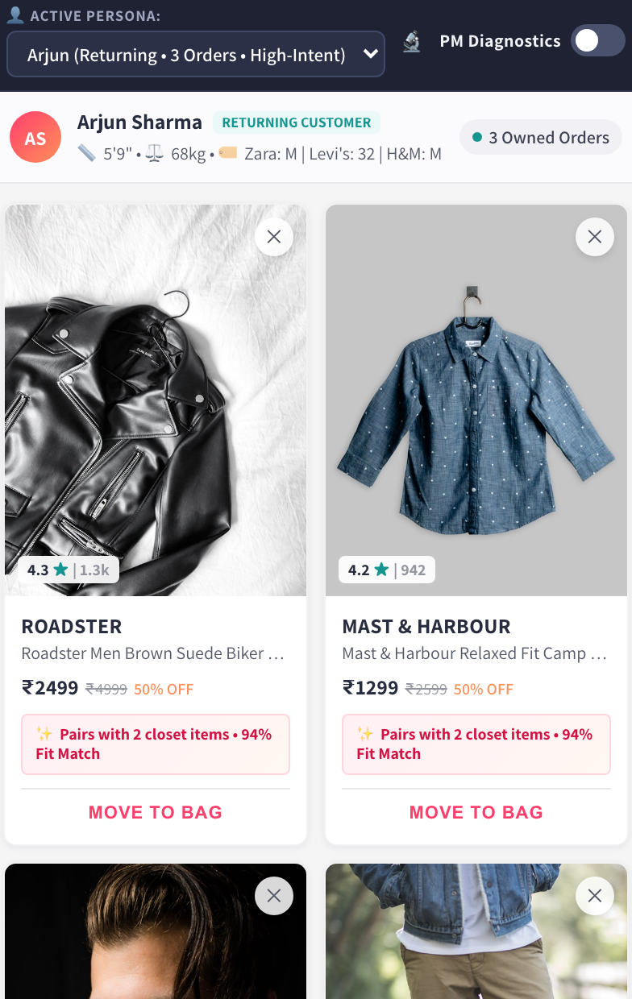
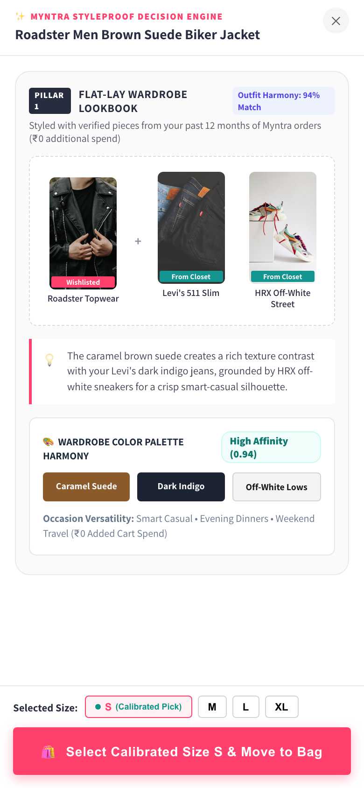
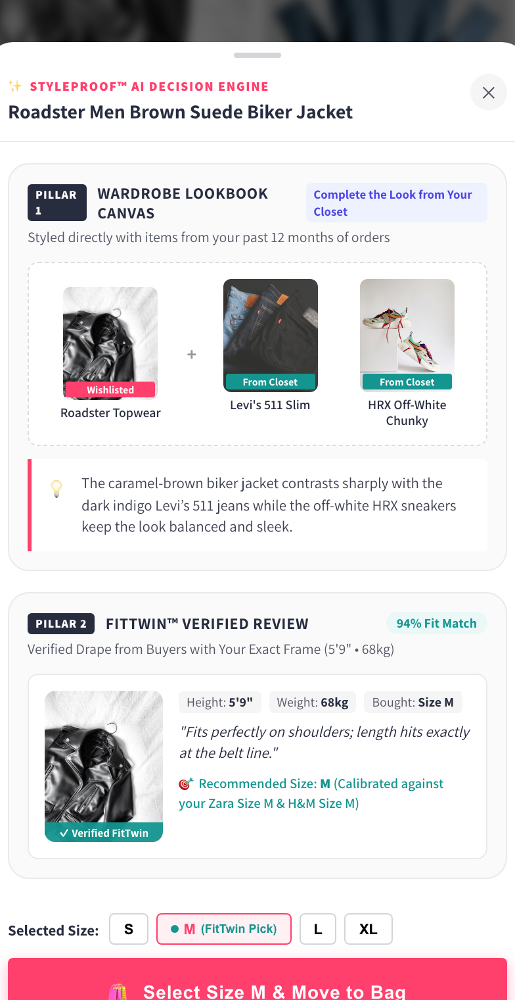

Rather than relying on intuition, an automated NLP pipeline synthesized multi-channel reviews to isolate root drivers of checkout hesitation.
r/IndianFashionAddicts)r/IndianFashionAddicts).
3 of 4 in-depth interviewees (75.0%) and 26 of 35 survey respondents (74.3%) distrust flat 2D size charts across fast-fashion labels (e.g. Zara M vs. Roadster M). Sizing doubt accounts for 60.8% of review complaints.
24 of 35 survey respondents (68.6%) cite wardrobe pairing doubt and 'orphan SKU' hesitation because they cannot visualize pairing the saved SKU with pants or shoes they already own at home, stalling saves for 40+ days.
Items well within historical budget sit unbought for 40+ days. Discounts subsidize transaction cost but fail to resolve sizing and styling anxiety.
Rather than relying on sparse customer photos (<2% coverage), leverages Myntra's proprietary database of 1,400+ exchange and return records per category.
Ingests customer's past 12-month verified orders to automatically pair wishlisted items with owned wardrobe pieces, eliminating the Cart Inflation Trap.
Identifies duplicate saves (e.g. 2 brown jackets) and renders a side-by-side trade-off matrix to resolve comparison paralysis.



WTC % = [ (Monthly Active Customers purchasing ≥1 wishlisted item within 30 days) / (Active Wishlist MAUs) ] × 100
Economic Output: +453,600 Incremental Buyers • ₹83.916 Cr/mo GMV • ₹1,007 Cr ARR
wishlist_badge_view → wishlist_badge_click • Validates zero-prompt ambient UI.
dedup_card_view → dedup_spec_compare • Breaks 2-SKU comparison deadlocks.
tray_add_to_bag_click with calibrated size payload • Direct 1-tap checkout handoff.
| Primary Failure Risk | Systemic Architectural Mitigation |
|---|---|
|
1. Sizing Calibration Error
Risk: Inaccurate sizing delta spikes apparel return rate above baseline.
|
Category Threshold Gating
Requires ≥10 return logs per brand pair; falls back to consensus brand sizing if threshold is unmet.
|
|
2. Aesthetic Palette Mismatch
Risk: Lookbook distrust & styling hesitation from clashing outfit pairings.
|
ResNet-50 Cosine Cutoff (≥0.80)
Threshold ≥0.80 match; automatically falls back to curated neutral basics (dark denim/tee).
|
|
3. Vendor / SKU Cold-Start
Risk: Sparse telemetry on new catalog additions causes erratic suggestions.
|
Three-Tier Silence Engine
Completely suppresses StyleProof badges on unverified new SKUs until ≥5 verified reviews exist.
|